Психологическая помощь, после которой понятно, что делать дальше
Когда в жизни что-то не ладится — этому всегда есть причина, и у каждой проблемы есть решение.
Обучение, где ты не только учишься, но и проживаешь: песочная терапия как инструмент жизненных изменений.
Осваиваем метод и находим опору в себе: обучение с терапевтическим эффектом.
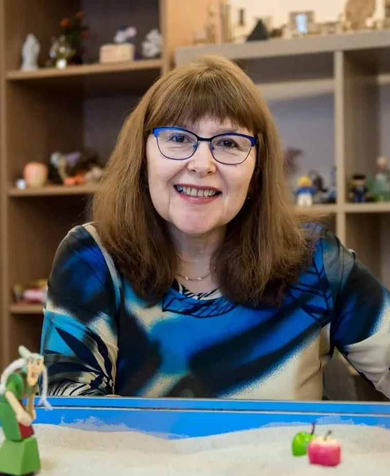
Песочная терапия
Песочная терапия — это бережное пространство, где внутренний мир человека становится видимым, понятным и исцелённым. Миниатюрные фигурки, песок и вода превращаются в живой язык души, способный выразить то, для чего пока просто нет слов.
Это не просто метод — это живой контакт, в котором в деревянном ящике с голубым дном рождается новая, гармоничная реальность. Песок заземляет, снимает напряжение и позволяет прикоснуться к самым сложным переживаниям без боли и сопротивления.
Я не толкую и не ставлю диагнозы по песочнице — я задаю вопросы, которые помогают услышать себя и самому найти нужное решение. Буду рада пройти этот путь вместе с вами!
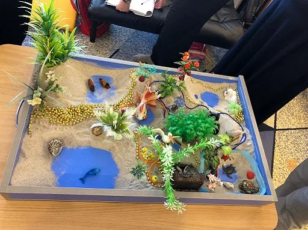
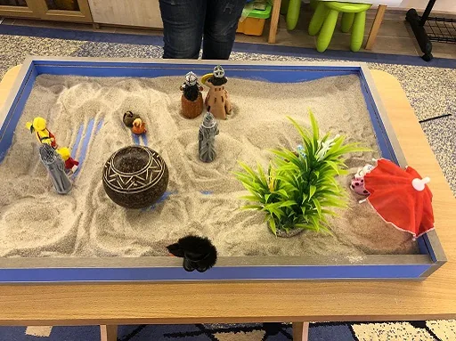
Знакомство и запрос
Обсуждаем, что привело вас на консультацию, и определяем, в каком формате будет удобнее работать.
Работа с образами или разговором
В зависимости от запроса — песочница, беседа или их сочетание; вы сами решаете, что откликается.
Осознание и следующий шаг
Проговариваем, что удалось увидеть и понять, и намечаем, что делать дальше.
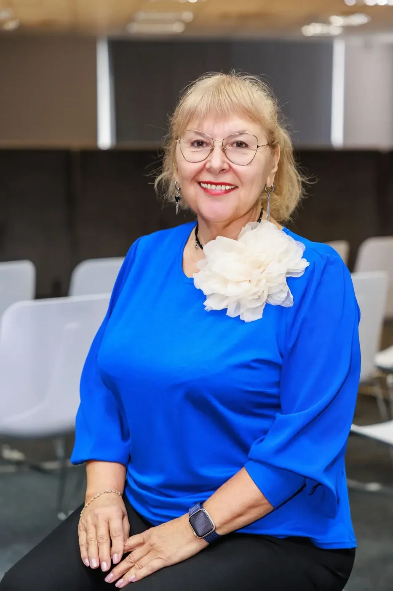
Любава Князева
Меня зовут Любава Никифоровна Князева. Я психолог, психотравматолог и специалист в области интегративной песочной терапии — работаю не в рамках одной школы, а соединяю разные подходы под запрос конкретного Клиента.
Сегодня я практикую в двух направлениях: индивидуальное консультирование и преподавание курса песочной терапии. В работе с клиентами придерживаюсь полимодального подхода — беру то, что действительно помогает конкретному человеку. Работаю и со взрослыми, и с детьми, индивидуально и в формате семейных консультаций, очно в Новосибирске и онлайн для тех, кто живёт в другом городе.
- Психотравматолог
- Преподаватель ОППЛ
- Аккредитованный супервизор
- Почётный член Союза специалистов песочной терапии
- Интегративная песочная терапия
- Работа со всеми возрастами
- Очно и онлайн
С чем я работаю
Индивидуальные консультации
Работа один на один с вашим запросом: тревога, самооценка, сложные решения, последствия травмы или кризиса. Полимодальный подход — это максимально эффективная помощь клиенту. В основе этого подхода лежит понимание, что человеческая психика многогранна, и для решения разных проблем требуются разные инструменты, индивидуально подобранные под запрос и личность каждого человека.
Работаем с тем, что для вас сейчас важнее всего: разобраться в чувствах, найти выход из тупика, справиться с тревогой или принять решение, которое давно откладывается. Использую полимодальный подход — беру методы из разных направлений психотерапии (в том числе песочную терапию), а не подгоняю ваш запрос под одну схему. Первая встреча — это всегда разговор о том, что привело вас, и совместный выбор формата дальнейшей работы.
Записаться на эту консультациюСемейные и детско-родительские консультации
Помогаю разобраться в конфликтах между супругами, между родителями и детьми, пройти семейный кризис. Встречи возможны как для всей семьи, так и по отдельности с каждым участником.
Работаю и с парой или семьёй целиком, и по отдельности с каждым участником конфликта — в зависимости от ситуации подберём подходящий формат. Помогаю бережно разрешать конфликты: со стороны взглянуть на ситуацию, услышать друг друга и найти выход без поиска виноватых. Отдельно работаю с детско-родительскими сложностями: непониманием, протестным поведением, трудностями переходного возраста.
Записаться на эту консультациюПесочная терапия
Работа с песком и фигурками — способ прожить и осознать то, что трудно сформулировать словами. Подходит детям, взрослым и семьям, в том числе при работе с травмой и потерей.
Интегративная песочная терапия — метод, в котором я работаю много лет и которому обучаю других специалистов. Песочница — это не просто инструмент, а безопасное пространство, где ваши внутренние переживания, тревоги и скрытые ресурсы обретают видимую форму. То, что сложно выразить словами, легко и естественно «оживает» в песке. Работа с образами и миниатюрами позволяет мягко обойти психологические защиты, бережно прикоснуться к самым глубоким травмам и найти экологичный выход из кризиса.
Записаться на эту консультациюГде проходят консультации
Мой кабинет полностью оборудован для глубокой и комфортной работы. Для песочной терапии здесь есть специальные песочницы и большая коллекция фигурок — животные, герои сказок, предметы быта: из них клиент выстраивает свою композицию.
Выбирая интуитивно те или иные предметы, вы создаёте объёмную картину своего внутреннего мира. Это помогает «подсветить» скрытые причины проблем, экологично прожить подавленные эмоции и увидеть верное решение там, где раньше был тупик.
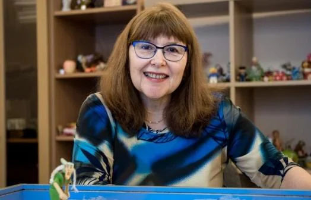
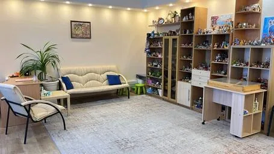
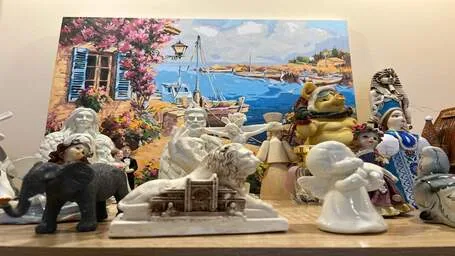
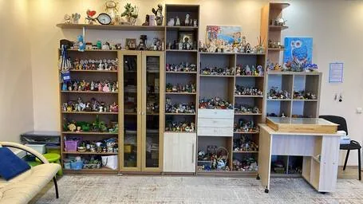
Программа дополнительного образования взрослых: «Песочная терапия как инструмент жизненных изменений»
Не просто знания — опыт, который исцеляет: обучение песочной терапии как путь к себе.
- Базовый курс песочной терапии
- Работа с травмой методом Питера Левина
- Песочная терапия в работе с детьми и семьёй
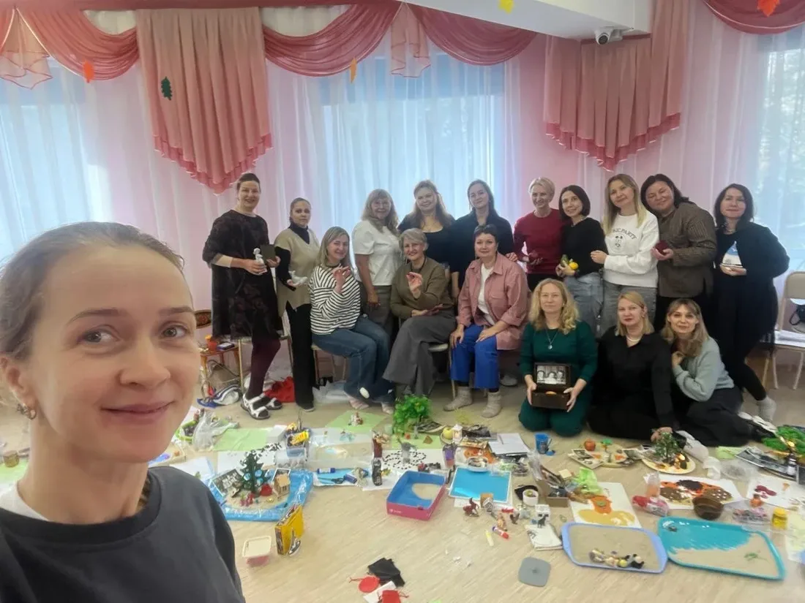
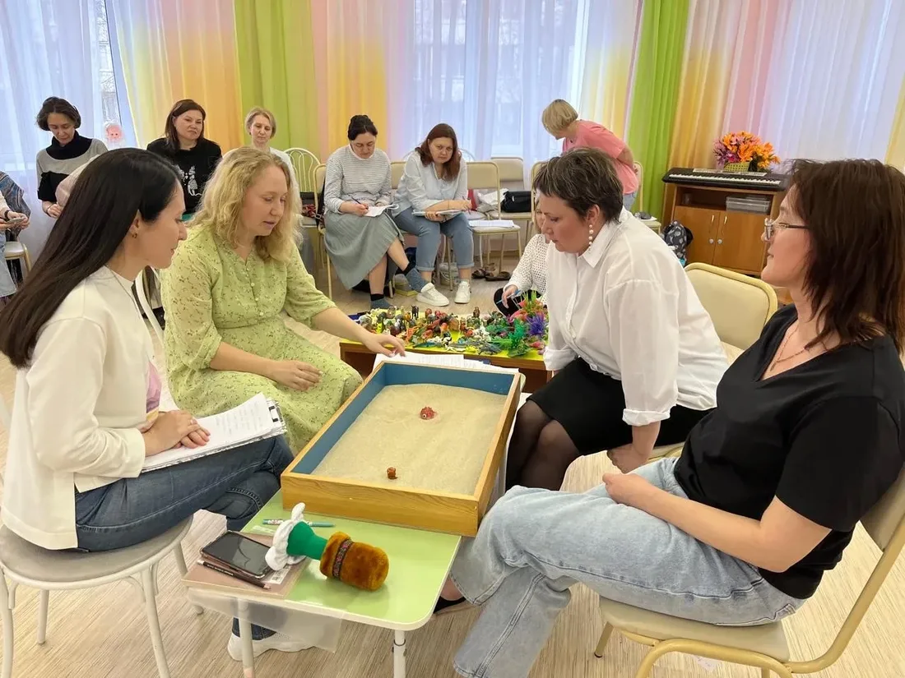
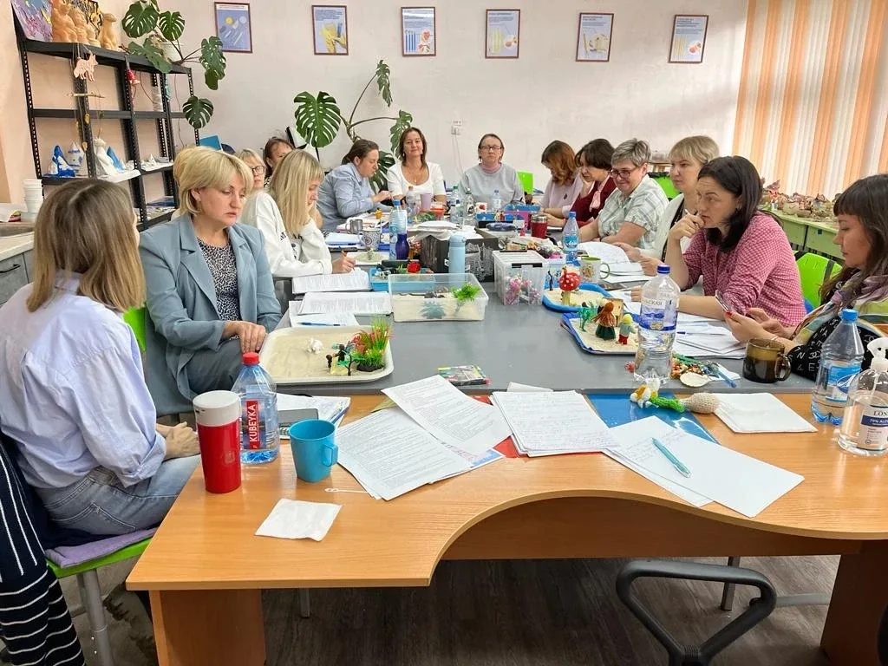
Что говорят клиенты
Я благодарна судьбе за встречу с настоящей Волшебницей — Любавой! Каждая наша встреча — это глубокая внутренняя работа и одновременно новые знания, которые не остаются мёртвым грузом, а сразу становятся опорой.
Лучшего проводника и наставника вряд ли встретишь. Чёткий алгоритм работы, честность и глубина в каждой встрече. Как говорит Любава — песок вытащит всё, а мастерство в том, чтобы знать, что с этим делать.
В последнее время нахожу подтверждение фразе «случайности не случайны» — и встреча с Любавой именно такая. Уже не первый год возвращаюсь к работе с ней, и каждый раз думаю: хоть бы не последний.
Записаться на консультацию
Напишите несколько слов о своём запросе — отвечу и предложу удобное время.